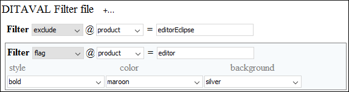
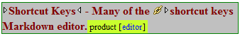
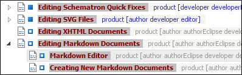

Styling the Rendering of Profiled Content Using a DITAVAL File
If you are using a DITAVAL filter file to control the filtering of profiled content, you can define the colors and styles to be used for rendering profiled condition sets in Author mode and the DITA Maps Manager by defining the styles in a flag filter that is set in a DITAVAL filter file.
How to Define a Flag for a Condition Set in a DITAVAL Filter File
- Create or edit your DITAVAL file to define your profiling condition set.
- In Author mode, define the filters for your condition set.
- Select Flag from the drop-down menu on in a particular Filter or Flag Revision to present additional drop-down menus that allow you to configure the colors and styles for the particular condition set.
- Save the DITAVAL file.
Result: Test your changes by opening profiled content in
Author mode or the DITA Maps
Manager and use the options in the  Profiling / Conditional Text drop-down menu
to see how the changes in your DITAVAL flag are rendered.
Profiling / Conditional Text drop-down menu
to see how the changes in your DITAVAL flag are rendered.
Using a Flag on a Filter to define the styling for a condition set like this:

will render the styling of the profiled content in Author mode to look like this:

and will render the styling in the DITA Maps Manager view to look like this:
